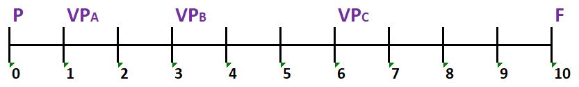
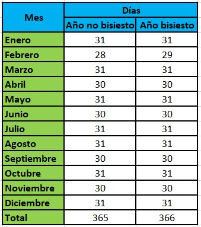
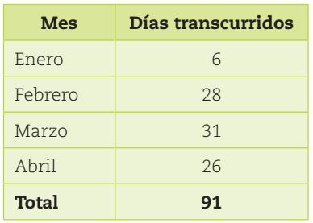
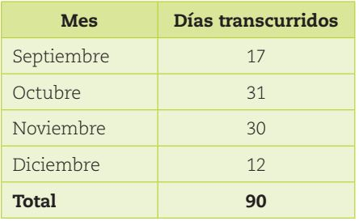

Valor presenteSuponga que usted, el día de hoy, recibe un préstamo de $100,000 a 13 meses de plazo y con una tasa de interés simple del 2.14% mensual. El monto de la deuda será:
\(F =100,000 \left [1+(0.0214)(13)\right ]=$127,820\)
Por el capital prestado usted deberá pagar $127,820 dentro de 13 meses. $127,820 son el monto o valor futuro de $100,000. Recíprocamente, se dice que $100,000 son el valor presente o valor actual de $127,820. Lo anterior significa que $100,000 hoy son equivalentes a $127,820 dentro de 13 meses a una tasa de interés simple del 2.14% mensual.
Por lo tanto, $100,000 disponibles hoy valen más que $100,000 disponibles dentro de 13 meses o de cualquier otro tiempo futuro, pues los $100,000 disponibles hoy pueden ser invertidos y ganar, de esta manera, intereses.
El valor presente, simbolizado como P o VP, de un monto o valor futuro F que vence en fecha futura se define como la cantidad de dinero que, invertida hoy a una tasa de interés dada, producirá el monto F.
Valor presente o valor actual de una deuda o inversión es el capital calculado en cualquier fecha conveniente, anterior a la fecha de vencimiento de la deuda o inversión; por lo tanto, no siempre coincide con el capital originalmente prestado o invertido.
Cuando se calcula un valor presente, a la tasa de interés utilizada se le llama a menudo tasa de descuento racional.
Por lo expuesto anteriormente, vemos que $100 (o cualquier otra cantidad de dinero) recibidos en una fecha futura no tienen el mismo valor que $100 recibidos el día de hoy; valen más $100 disponibles hoy que $100 recibidos en una fecha futura, ya que $100 recibidos el día de hoy pueden invertirse y ganar intereses durante el periodo de inversión.
Por otro lado, debido a la inflación, el dinero tiene un poder adquisitivo, o poder de compra de bienes y servicios, que se va deteriorando a medida que transcurre el tiempo. Por lo tanto, $100 recibidos el día de hoy valen más que $100 recibidos en una fecha futura, ya que $100 recibidos hoy tienen un mayor poder de compra de bienes y servicios.
Esta relación que existe entre el tiempo, el interés y el poder de compra del dinero se conoce como valor del dinero en el tiempo y constituye uno de los conceptos fundamentales de las matemáticas financieras.
El concepto de valor del dinero en el tiempo establece que una cantidad de dinero disponible en el presente vale más que la misma cantidad en el futuro.
\(\displaystyle VP=\frac {F}{1+i\cdot t}\)
Donde:
VP = Valor presente
i = La tasa de interés aplicable
t = Tiempo o plazo transcurrido durante el cual se usa o se invierte el capital.
Por ejemplo, si tenemos una inversión a 10 periodos (años, bimestres, meses, etc.) tendremos que

VPA - Es el valor presente de F a 9 (10 - 1) periodos antes de que venza el plazo.
VPB - Es el valor presente de F a 7 (10 - 3) periodos antes de que venza el plazo.
VPC - Es el valor presente de F a 4 (10 - 6) periodos antes de que venza el plazo.
Ejemplo 1. Encuentre el valor presente de $25,000 que vencen dentro de 7 meses si la tasa de interés o tasa de descuento racional es del 28%.
Solución:
F = $25,000
i = 28% anual
t = 7 meses
Obtener el valor presente de un monto dado equivale a responder esta pregunta: ¿Qué cantidad, invertida hoy a una tasa de interés y periodo dados, producirá el monto conocido?.
\(\displaystyle VP=\frac {F}{1+i\cdot t}\)
\(\displaystyle VP=\frac {25,000}{1+\left (\frac {0.28}{12}\right )\cdot (t)}\)
\(\displaystyle VP=21,489.17\)
La interpretación del resultado obtenido es:
▶ $21,489.97 invertidos hoy, al 28% anual, se convertirán en $25,000 al cabo de 7 meses.
▶ $21,489.97 son equivalentes a $25,000 si el tiempo es de 7 meses y la tasa de interés o tasa de descuento racional es del 28% anual simple.
▶ $21,489.97 es el valor del dinero 7 meses antes de su vencimiento, y no necesariamente corresponden al capital originalmente prestado.
Ejemplo 2. Francisco pidió prestado $170,000 a 20 meses de plazo y una tasa de interés simple del 24% anual. Calcule el valor presente de la deuda seis meses antes de su vencimiento.
Solución:
P = $170,000
i = 24% anual
t1 = 20 meses
t2 = 6 meses
Como el valor presente es el capital de un monto dado, se debe calcular, en primer lugar, el monto de la deuda. Esto es,
\(F=P(1+ i \cdot t_1)\)
\(\displaystyle F=170,000\left [1+ \left(\frac {0.24}{12}\right) \cdot (20)\right]\)
\(F=238,000\)
Por lo tanto, el valor presente de la deuda 6 meses antes de su vencimiento será:
\(\displaystyle VP=\frac {F}{1+i\cdot t_2}\)
\(\displaystyle VP=\frac {238,000}{1+\left (\frac {0.24}{12}\right )\cdot (6)}\)
\(\displaystyle VP=212,500\)
Interés exacto e interés ordinarioCuando el tiempo en un préstamo está dado en días, es necesario convertir la tasa de interés anual a una tasa de interés por día.
Cuando la tasa anual se convierte a tasa diaria utilizando el año natural (365 días o 366 si el año es bisiesto) como divisor en la fórmula del interés simple o del monto, el interés obtenido se llama interés exacto.
Cuando se lleva a cabo la conversión utilizando como divisor el año comercial (360 días), el interés obtenido se llama interés comercial, o interés ordinario.

Ejemplo 1. Calcule el interés comercial y exacto de un préstamo por $18,300 al 35% y 48 días de plazo.
Solución:
\(\displaystyle I=P\cdot i \cdot t\)
Interés comercial.
\(\displaystyle I=(18,300)\left ( \frac{0.35}{360}\right)(48)=854.00\)
Interés exacto
\(\displaystyle I=(18,300)\left ( \frac{0.35}{365}\right)(48)=842.30\)
Como se puede observar, el interés comercial resulta más elevado que el interés exacto para el mismo capital, tasa de interés y tiempo.
Esta ganancia extra hace que el año comercial sea muy utilizado en los bancos, casas de bolsa y en comercios que venden a crédito.
El año comercial es utilizado por bancos, casas de bolsa y comercios en, prácticamente, todas sus operaciones financieras. El año comercial se debe a una costumbre surgida entre los prestamistas de la Edad Media, los cuales definieron el año comercial como aquel formado de 12 meses de 30 días cada uno.
El uso del año natural en los cálculos financieros prácticamente no se utiliza en México.
En los ejercicios, si el problema no menciona de manera explícita cuál interés debe calcularse, entonces se supone que se trata del interés comercial.
Si no se indica explícitamente usar el año bisiesto, deberemos usar el año no bisiesto.
En muchas ocasiones, el periodo entre el momento en que se toma un préstamo o se invierte un determinado capital y su vencimiento se indica mediante fechas. Para calcular el tiempo transcurrido entre dos fechas, se cuentan los días efectivos calendario. Al calcular el número de días se acostumbra excluir el primer día e incluir el último; sin embargo, ésta no es una práctica generalizada, ya que algunas veces se cuenta tanto el primer día como el último.
En todos los ejercicios, a menos que se diga lo contrario, se excluirá el primer día.
De esta forma, para un préstamo contraído el 25 de enero y liquidado el 26 de abril del mismo año, no bisiesto, el tiempo transcurrido es de 91 días.

Ejemplo 1. Calcule los intereses ordinario y exacto de un préstamo por $26,720 a 30% anual, del 13 de septiembre al 12 de diciembre de un año no bisiesto.
Solución:
Cálculo de los días transcurridos:

por lo tanto
P = 26,720
i = 30% anual
t= 90 días
\(\displaystyle I=P\cdot i \cdot t\)
Interés comercial.
\(\displaystyle I=(26,720)\left ( \frac{0.30}{360}\right)(90)=2,004\)
Interés exacto
\(\displaystyle I=(26,720)\left ( \frac{0.30}{365}\right)(90)=1,976.55\)
Ejemplo 2. En cierto banco, la tasa de interés neto para las cuentas de ahorro en el caso de las personas físicas es del 5.75% anual. El señor Aguilar abrió una cuenta de ahorros con $71,300 el día 3 de mayo. No realizó depósitos ni retiros posteriores a la fecha de apertura de la cuenta, y el 29 del mismo mes la canceló. ¿Cuánto dinero recibió el señor Aguilar? Utilice el año natural.
Solución:
Días transcurridos: 29 – 3 = 26 días, por lo tanto
P = 71,300
i = 5.75% anual
t = 26 días
\(F=P(1+ i \cdot t_1)\)
\(\displaystyle F=71,300\left [1+ \left(\frac {0.0575}{365}\right) \cdot (26)\right]\)
\(F=71,592.04\)